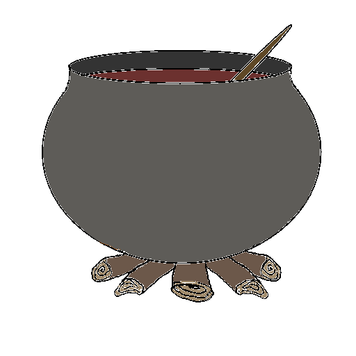

Історія українського борщу
Поширення та походження борщу
Походження бурякового борщу — українське. На думку багатьох експертів, саме з України борщ поширився на різні території й так органічно там прижився, що кожна країна вважає його для себе традиційним. Зустрічаються борщові назви в білоруській, литовській і російській кухнях, але пріоритет розробки рецептури залишається за українцями.
У США «борщовим поясом» називають місцевості, де жили євреї-іммігранти зі Східної Європи. У більшості випадків можна простежити, що українські землі були епіцентром, з якого борщ як страва і культурне явище розходився «борщовим поясом».
Борщ почали готувати ще в пізньому Середньовіччі. Борщ міг потрапити до кухонь сусідніх країн шляхом культурних запозичень.
Ранні документальні свідчення
У 1584 році була задокументована, імовірно — найперша згадка про український борщ у Києві, у щоденнику німця Мартина Ґруневеґа під час його відвідин Києва:
Русини знають, яким могутнім містом був Київ і те, що він був столицею їхніх князів… вони ще говорять, що ця річка (Борщагівка) дістала таку назву, бо біля неї, на місці нашого нічлігу, був Борщовий торг. І хоч це місце було так само далеко від міста, як і тепер, воно могло називатися борщовим майданом чи торгом, незалежно від того, чи там торгували борщем… До того ж русини рідко або швидше ніколи не купують борщу, а кожен робить його у себе вдома, бо це їхня щоденна їжа і напій.
Ґруневеґ не описав рецепту борщу, але з наведеної цитати очевидно, що йдеться про так звану «першу страву», оскільки це одночасно і їжа, і питво, тобто вона є рідкою за своїм складом. На думку історика-джерелознавця Олексія Сокирка, Ґруневеґ застав уже усталену традицію приготування борщу в Україні. Починаючи з XVII століття, від Перемишля до Гадяча, борщ згадують в Україні як звичну страву: згадки про борщ, як про щоденну і як святкову страву трапляються у документах монахів, спудеїв, козаків, селян, старшини різного достатку. Борщ був універсальною стравою, різнилися інгредієнти, що вказували на суспільний стан. Традиція приготування борщу, різних його варіантів, покриває всю територію України того часу.
